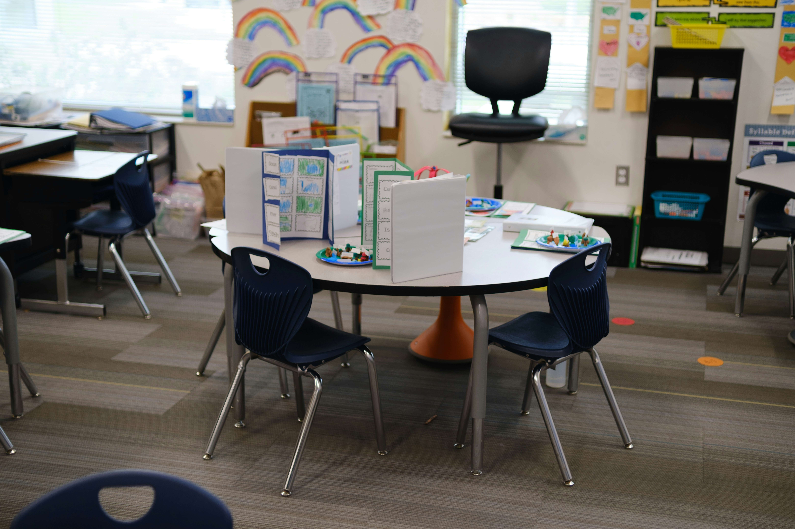

School roll capacity pressure in the Bay of Plenty-Waiariki region, New Zealand. Ministry of Education (MoE) data, 189 schools, 2010–2025.
Four things the numbers below say about the region, before you dig into the charts.
Sum of roll across the 189 schools in the region by year, with a 3-year moving average to smooth out year-to-year noise. The dip in 2022 and the flat finish in 2025 are the two moments worth a second look.
Almost all of the region-wide growth above is concentrated in one place. Roll stacked by TA over time, who makes up the regional total and how that composition shifts.
Zooming from territorial authorities down to individual schools: most recent year-over-year change per school, the 10 schools that grew the most and the 10 that fell the most across the whole region.
That growth is now showing up as pressure on individual schools. Schools whose 2025 roll is at or above their own historical maximum (2010–2025). This is a proxy, not a real measurement of physical capacity: the MoE dataset does not publish classroom capacity. A school with only a few years of data trivially shows up "at its maximum".
| School | TA | Year | Roll | Historical max | % of max | Years of data |
|---|
Beyond growth and capacity, a third lens: are the students who start at a school actually staying? Retention/leakage per school for the cohort that was in Year 5 in 2020 and should be in Year 6 in 2021. Regional average: . schools show a decline. Note: this source counts ethnicity as "total response", so the absolute counts are inflated equally on both sides, the retention ratio is valid, the absolute counts are not real headcounts.
| School | TA | Year 5 2020 | Year 6 2021 | Change % |
|---|
2025 snapshot per school: roll, year-over-year change, moving average and % of own historical maximum.
| School | TA | 2025 roll | YoY % | 3yr avg | % of max | Status |
|---|